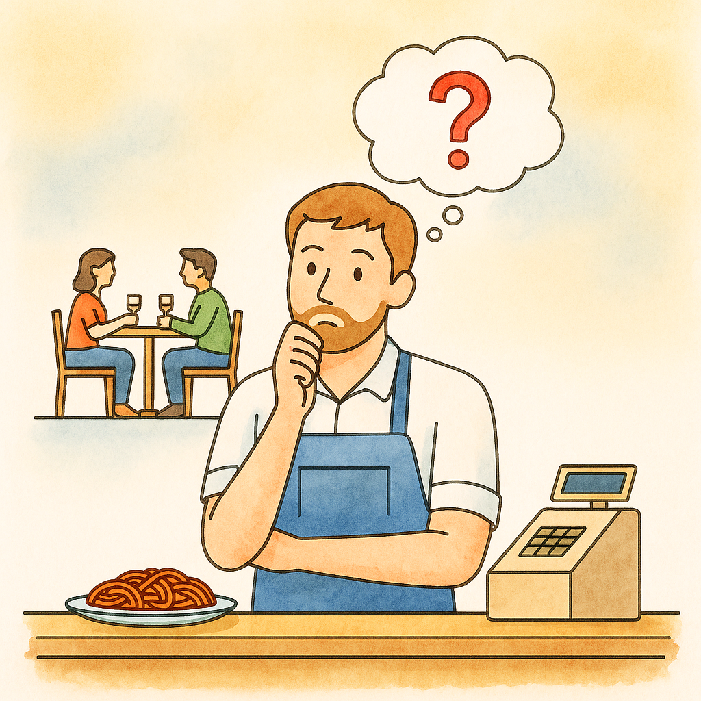
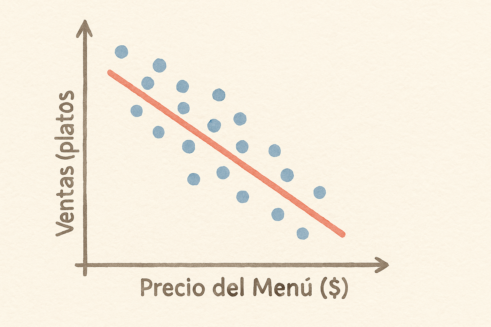

6 Descubriendo Patrones con Regresión Lineal

Imagina que eres due√±o de un restaurante üçù.
Cada día recibes clientes, vendes platos y al final de la semana te preguntas:
¿Qué hace que mis ventas suban o bajen?
¿Será el precio de los platos, la inversión en publicidad, o quizá los fines de semana festivos?
Aquí entra en acción la regresión lineal, una herramienta que nos ayuda a descubrir patrones escondidos en los datos.
6.1 6.1 Una primera pista con la Regresión Simple
Empecemos simple: ¿qué pasa con tus ventas y el precio del menú?
Si anotas tus datos semana a semana y los pones en un gráfico como el de abajo, notarás que cuando el precio sube, las ventas tienden a bajar. La regresión lineal traza la mejor línea recta que explica esa relación.

La ecuación que representa la línea roja de ese gráfico se ve así:
\[ Ventas = b_0 + b_1 \times Precio + \varepsilon \]
- \(b_0\): el punto de partida (ventas cuando el precio es cero, aunque no sea realista vender gratis üçï).
- \(b_1\): la pendiente; cuánto cambian las ventas si subes el precio en una unidad.
- \(\varepsilon\): el ruido que la línea no puede explicar (clima, humor del chef, partidos de fútbol, etc.).
üëâ Si el modelo encuentra que:
\[ \hat{Ventas} = 500 - 25 \times Precio \]
significa que por cada $1 más en el precio, pierdes 25 platos vendidos en promedio. ¡Cuidado con pasarte de caro!
6.2 ¿Es realmente importante mi coeficiente? (significancia estadística)
Hasta ahora vimos que un coeficiente \(b_1\) nos dice cómo cambia \(Y\) cuando \(X\) sube una unidad.
Pero la gran pregunta es: ¿podemos confiar en que ese efecto no apareció solo por azar?
Aquí entran las pruebas de hipótesis que estudiamos el capítulo anterior.
6.2.1 El planteamiento
- Hipótesis nula (\(H_0\)): el coeficiente es igual a 0.
> Es decir, que la variable no tiene efecto real en las ventas.
- Hipótesis alternativa (\(H_1\)): el coeficiente es diferente de 0.
> Que sí existe un impacto real.
Para saber si tu coeficiente es realmente significativo, puedes usar el valor p (p-value). Este valor te dice la probabilidad de que el coeficiente sea cero (es decir, que no tenga efecto).
- Si el valor p es menor que 0.05, puedes decir que el coeficiente es significativo. Esto significa que hay evidencia suficiente para afirmar que el precio sí afecta las ventas.
- Si el valor p es mayor que 0.05, no puedes rechazar la hipótesis nula de que el coeficiente es cero. En otras palabras, no hay suficiente evidencia para afirmar que el precio afecta las ventas.
6.2.2 Ejemplo de restaurante üçù
Supongamos que obtienes un nuevo modelo al recoger más datos:
\[ \hat{Ventas} = 400 - 20 \times Precio + 60 \times Publicidad \]
- El coeficiente de Precio = -20 sugiere que subir $1 reduce 20 platos vendidos.
- Pero, ¿y si esa relación negativa se debe solo a la casualidad en tus datos?
6.2.3 La prueba
El software (R, Excel, Stata, etc.) hace un test t que compara el valor del coeficiente con la variabilidad de los datos.
De ahí sale un número mágico: el p-valor.
- Si el p-valor < 0.05, rechazamos la hipótesis nula.
> Concluimos que el efecto es significativo: el precio sí afecta las ventas.
- Si el p-valor ≥ 0.05, no tenemos suficiente evidencia.
> No podemos asegurar que el precio influya: podría ser puro ruido.
6.2.4 La moraleja
Un coeficiente puede verse grande o pequeño, positivo o negativo, pero lo crucial es saber si es estadísticamente diferente de cero.
Solo así podemos decir con confianza que esa variable explica parte de la historia de nuestros datos.
üëâ En negocios, esto significa que antes de tomar decisiones (subir precios, invertir en publicidad, lanzar una promo) debemos asegurarnos de que los efectos que vemos no sean simplemente coincidencias.
6.3 Midiendo qué tan bien funciona mi regresión
No basta con tener la línea (regresión), también queremos saber qué tan buena es.
Para eso usamos el famoso \(R^2\), también llamado coeficiente de determinación:
- Si \(R^2 = 0.8\), entonces el 80% de las variaciones en ventas se explican solo con el precio.
- El 20% restante‚Ķ bueno, puede ser el clima, la competencia, o ese influencer foodie que lleg√≥ sin avisar üì∏.
Si \(R^2 = 0\), tu modelo no explica nada: sería como decir que el precio no tiene relación alguna con las ventas, y que lo único que podrías hacer es mirar el promedio de todas las semanas.
Si \(R^2 = 1\), tu modelo explica todo: las ventas estarían perfectamente determinadas por el precio, sin misterios, sin azar, sin sorpresas (lo cual rara vez pasa en la vida real).
Piensa en \(R^2\) como un termómetro de confianza: te dice qué tan buena es tu línea de regresión para capturar la historia detrás de tus datos. No es perfecto, pero sí es una brújula que te orienta sobre cuánto puedes fiarte de tu modelo para explicar lo que ves.
6.4 Sumando más ingredientes: la Regresión Múltiple
En la vida real, tus ventas no dependen solo del precio.
En tu restaurante también influyen otros “ingredientes” del negocio:
- el precio del menú,
- el dinero invertido en publicidad,
- y si fue o no una semana festiva.
La regresión múltiple nos permite poner todos esos factores en la misma receta estadística.Supongamos que tus datos arrojan:
\[ \hat{Ventas} = 400 - 20 \times Precio + 60 \times Publicidad + 15 \times Festivo \]
Interpretación:
- Cada $1 más en el precio reduce en promedio 20 platos vendidos.
- Cada $100 en publicidad aumentan las ventas en 60 platos.
- Si es semana festiva, se venden 15 platos extra aunque no cambie nada más.
Plantilla de interpretación (ceteris paribus): significa que por cada unidad que aumente variable, la variable dependiente cambia en promedio coeficiente unidades, manteniendo constantes las demás variables.
Ejemplo: por cada $1 que aumenta el precio, las ventas semanales disminuyen en promedio 20 platos, manteniendo la publicidad y la condición de semana festiva constantes.
En otras palabras, la regresión múltiple te permite separar los efectos:
sabes qué parte de las ventas se debe al precio, qué parte a la publicidad y qué parte al calendario.
6.4.1 Significancia en la regresión múltiple
En regresión múltiple evaluamos la significancia de cada coeficiente de la misma manera que en la regresión simple: mediante un estadístico t y su p-valor. Cada coeficiente se interpreta ceteris paribus (manteniendo las demás variables constantes), por eso es importante no mezclar la interpretación de los efectos.
Ejemplo (resumen):
- \(\hat{Ventas} = 400 - 20\times Precio + 60\times Publicidad + 15\times Festivo\)
- p-valores (ej.): Precio \(p<0.01\) (significativo), Publicidad \(p=0.18\) (no significativo), Festivo \(p=0.03\) (significativo)
Aunque el coeficiente de publicidad sea 60, su p-valor elevado (\(p=0.18\)) indica que no hay suficiente evidencia para afirmar que la publicidad tiene un efecto sobre las ventas una vez controlamos por precio y festivo (ceteris paribus). Esto implica que aunque el coeficiente sea 60, en términos estadísticos es 0.
6.5 Conclusión
La regresi√≥n lineal, ya sea simple o múltiple, funciona como una lupa üîç:
te ayuda a distinguir qué factores realmente impulsan tus resultados y cuáles son solo ruido.
En el restaurante esto significa tomar decisiones con más confianza:
¿bajo precios?, ¿aumento el presupuesto en publicidad?, ¿aprovecho mejor los festivos?
üëâ La magia está en que no tienes que adivinar. Los datos te cuentan la historia, y la regresi√≥n es el traductor.